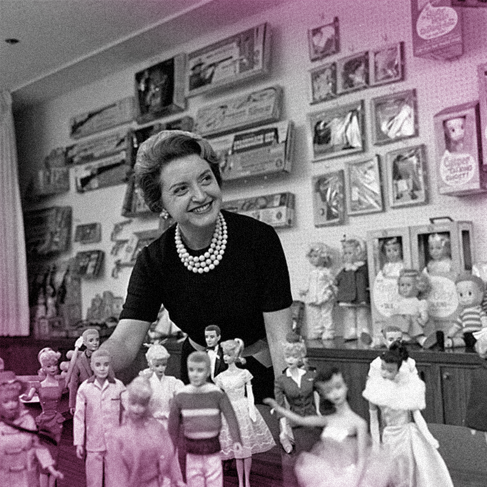
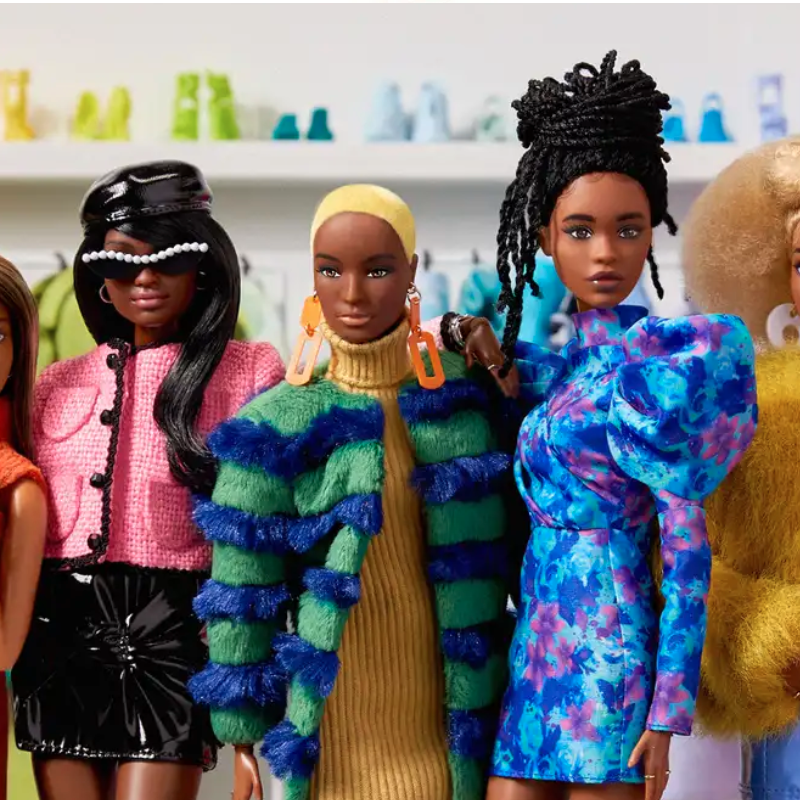

A empresária e idealizadora da Boneca Barbie é a Ruth Handler
Mais informações
A ideia original era criar uma boneca para meninas que tivessem caracteristicas mais humanas e não fossem apenas para crianças pequenas.Ruth Handler se inspirou na sua filha para criar a boneca

A franquia Barbie atualmente apresenta uma grande diversidade
Mais informações
A primeira boneca de cor surgiu em 1980, hoje em dia a Barbie possui mais de 20 tons de pele e tipos corporais variados para representar todas as crianças, incluindo bonecas PCD.No mais recente filme da Barbie, a atriz Margot Robbie fará o papel principal!